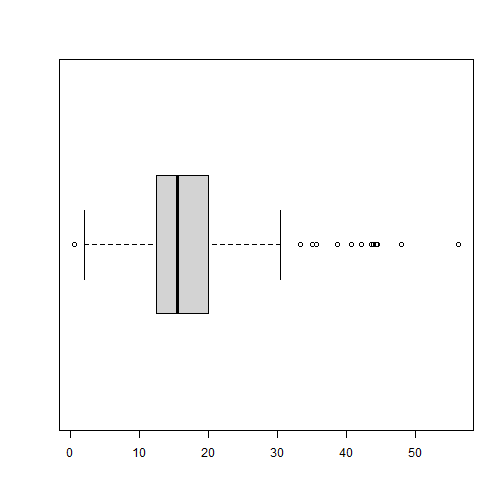
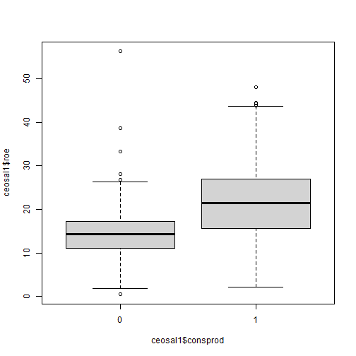
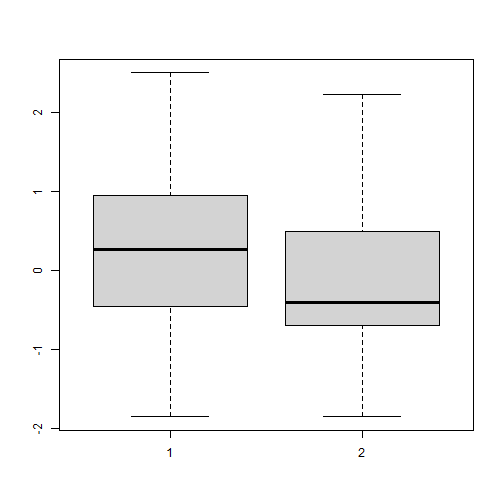
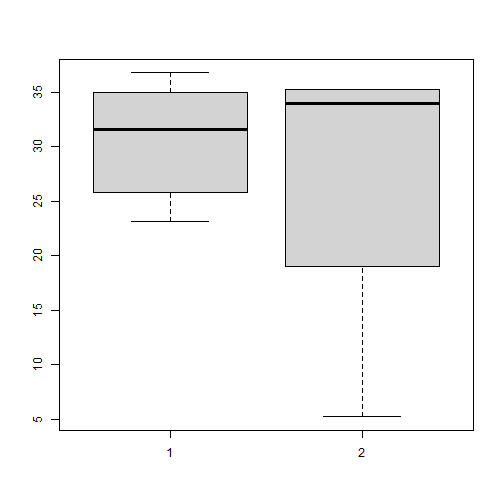

Kurtosis
mean(mtcars$mpg)
#> [1] 20.09062
median(mtcars$mpg)
#> [1] 19.2
min(mtcars$mpg)
#> [1] 10.4
max(mtcars$mpg)
#> [1] 33.9
quantile(mtcars$mpg)
#> 0% 25% 50% 75% 100%
#> 10.400 15.425 19.200 22.800 33.900
quantile(mtcars$mpg,c(0.2))
#> 20%
#> 15.2
require(moments)
#> Loading required package: moments
skewness(mtcars$mpg)
#> [1] 0.6404399
kurtosis(mtcars$mpg)
#> [1] 2.799467x <- rnorm(100)
quantile(x, probs = c(0, 0.25, 0.5, 0.75, 1)) # quartile
quantile(x, probs = seq(0, 1, by= 0.01)) # decile
ecdf(x)問題：ecdf()的結果和quantile()的結果是否一樣？
##匯入其他格式的資料
安裝package : foreign，以stata 為例(利用其中的函數read.dta())：
if (!file.exists('resources/ceosal1.RData')){
ceosal1<-read.dta("http://fmwww.bc.edu/ec-p/data/wooldridge/ceosal1.dta")
save(ceosal1, file='resources/ceosal1.RData')
}load('resources/affairs.RData')
# 原始資料kid是整數，加入標籤成為factor
haskids <- factor(affairs$kids,labels=c("no","yes"))
mlab <- c("very unhappy","unhappy","average","happy", "very happy")
marriage <- factor(affairs$ratemarr, labels=mlab)
# Frequencies for having kids:
table(haskids)
#> haskids
#> no yes
#> 171 430
# Marriage ratings (share):
prop.table(table(marriage))
#> marriage
#> very unhappy unhappy average happy very happy
#> 0.0266223 0.1098170 0.1547421 0.3227953 0.3860233
# Contigency table: counts (display & store in var.)
(countstab <- table(marriage,haskids))
#> haskids
#> marriage no yes
#> very unhappy 3 13
#> unhappy 8 58
#> average 24 69
#> happy 40 154
#> very happy 96 136
# Share within "marriage" (i.e. within a row):
prop.table(countstab, margin=1)
#> haskids
#> marriage no yes
#> very unhappy 0.1875000 0.8125000
#> unhappy 0.1212121 0.8787879
#> average 0.2580645 0.7419355
#> happy 0.2061856 0.7938144
#> very happy 0.4137931 0.5862069
# Share within "haskids" (i.e. within a column):
prop.table(countstab, margin=2)
#> haskids
#> marriage no yes
#> very unhappy 0.01754386 0.03023256
#> unhappy 0.04678363 0.13488372
#> average 0.14035088 0.16046512
#> happy 0.23391813 0.35813953
#> very happy 0.56140351 0.31627907如果不知道函數prop.table()
看一下資料結構
str(x<-table(haskids))
#> 'table' int [1:2(1d)] 171 430
#> - attr(*, "dimnames")=List of 1
#> ..$ haskids: chr [1:2] "no" "yes"上面的結構顯示，
可以由dimnames(x)得到一個list,裡面只有一個元素，這個元素又是一個char list(長度為2)。
因此可以試試看
x/sum(x)
#> haskids
#> no yes
#> 0.2845258 0.7154742結果應該和prop.table()一樣。
那麼2 way 呢？
也是先看結構：
str(countstab <- table(marriage,haskids))
#> 'table' int [1:5, 1:2] 3 8 24 40 96 13 58 69 154 136
#> - attr(*, "dimnames")=List of 2
#> ..$ marriage: chr [1:5] "very unhappy" "unhappy" "average" "happy" ...
#> ..$ haskids : chr [1:2] "no" "yes"
countstab/rowSums(countstab)
#> haskids
#> marriage no yes
#> very unhappy 0.1875000 0.8125000
#> unhappy 0.1212121 0.8787879
#> average 0.2580645 0.7419355
#> happy 0.2061856 0.7938144
#> very happy 0.4137931 0.5862069
countstab/colSums(countstab)
#> haskids
#> marriage no yes
#> very unhappy 0.01754386 0.03023256
#> unhappy 0.01860465 0.33918129
#> average 0.14035088 0.16046512
#> happy 0.09302326 0.90058480
#> very happy 0.56140351 0.31627907
#??countstab/colsum(countstab)load('resources/ceosal1.RData')
# sample average:
mean(ceosal1$salary)
#> [1] 1281.12
# sample median:
median(ceosal1$salary)
#> [1] 1039
#standard deviation:
sd(ceosal1$salary)
#> [1] 1372.345
# summary information:
summary(ceosal1$salary)
#> Min. 1st Qu. Median Mean 3rd Qu. Max.
#> 223 736 1039 1281 1407 14822
# correlation with ROE:
cor(ceosal1$salary, ceosal1$roe)
#> [1] 0.1148417
boxplot(ceosal1$roe,horizontal = T)
boxplot(ceosal1$roe~ceosal1$consprod)
SR87<-c(10,1,6,.45,1.25,1.3,1.06,3,8.18,1.67,.98,1,.45,
5.03,8,9,18,.28,7,3.97)
SR88<-c(3,1,5,.5,1.54,1.5,.8,2,.67,1.17,.51,.5,.61,6.7,
4,7,19,.2,5,3.83)(Change <- SR88 - SR87)
#> [1] -7.00 0.00 -1.00 0.05 0.29 0.20 -0.26 -1.00 -7.51 -0.50 -0.47 -0.50
#> [13] 0.16 1.67 -4.00 -2.00 1.00 -0.08 -2.00 -0.14(avgCh<- mean(Change))
#> [1] -1.1545
(n <- length(Change))
#> [1] 20
(sdCh <- sd(Change))
#> [1] 2.400639
(se <- sdCh/sqrt(n))
#> [1] 0.5367992
(c <- qt(.975, n-1))
#> [1] 2.093024c( avgCh - c*se, avgCh + c*se )
#> [1] -2.27803369 -0.03096631驗證
v.n <- length(Change)
v.mean <- sum(Change)/v.n
v.std <-sqrt(sum((Change-v.mean)^2)/(v.n-1))
v.se <- v.std/sqrt(v.n)
rst<-list(v.n,v.mean,v.std,v.se)
rst
#> [[1]]
#> [1] 20
#>
#> [[2]]
#> [1] -1.1545
#>
#> [[3]]
#> [1] 2.400639
#>
#> [[4]]
#> [1] 0.5367992練習：黑白種，用同一個CV找工作。
load('resources/audit.dta')
head(audit)
#> w b y
#> 1 1 1 0
#> 2 1 1 0
#> 3 1 1 0
#> 4 1 1 0
#> 5 1 1 0
#> 6 0 0 0y是前兩個欄位相減。以第1筆資料為例，兩個都是1，沒差別(y=0)。
t statistic for H0: mu=0:
自由度(d.f.)為 n-1 =240 的t分配，其臨界值Critical values(如下):
alpha.one.tailed = c(0.1, 0.05, 0.025, 0.01, 0.005, .001)
CV <- qt(1 - alpha.one.tailed, n-1)
cbind(alpha.one.tailed, CV)
#> alpha.one.tailed CV
#> [1,] 0.100 1.285089
#> [2,] 0.050 1.651227
#> [3,] 0.025 1.969898
#> [4,] 0.010 2.341985
#> [5,] 0.005 2.596469
#> [6,] 0.001 3.124536t.test()H0: y=5, H1:y>5, 信賴區間0.99
t.test(y, mu=5, alternative=“greater”, conf.level=0.99)
利用函數算：
# ex.C.3: two-sided CI
t.test(audit$y)
# ex.C.5 & C.7: 1-sided test:
t.test(audit$y, alternative="less")One Sample t-test
data: audit$y
t = -4.2768, df = 240, p-value = 2.739e-05
alternative hypothesis: true mean is not equal to 0
95 percent confidence interval:
-0.1939385 -0.0716217 **說明：mu +/- c.level*(se) 見手算例 **
sample estimates:
mean of x
-0.1327801
One Sample t-test
data: audit$y
t = -4.2768, df = 240, p-value = 1.369e-05
alternative hypothesis: true mean is less than 0
95 percent confidence interval:
-Inf -0.08151529
sample estimates:
mean of x
-0.1327801目的：分組求統計量
大綱是：先探索一下我們可能用到的R語言技巧，然後是寫成函數。
如果不分組
age = c(23.0883, 25.8344, 29.4648, 32.7858, 33.6372,
34.935, 35.2115, 35.2115, 5.2115, 36.7803)
group = c(1, 1, 1, 2, 1, 1, 2, 2, 2, 1)
dframe = data.frame(age=age, group=group)
summary(dframe)
#> age group
#> Min. : 5.212 Min. :1.0
#> 1st Qu.:26.742 1st Qu.:1.0
#> Median :33.212 Median :1.0
#> Mean :29.216 Mean :1.4
#> 3rd Qu.:35.142 3rd Qu.:2.0
#> Max. :36.780 Max. :2.0data.frame 的record篩選，可以利用邏輯值索引來篩選分組，這裡的範例都是求得一組(以第一分類為例)：
ft<-factor(dframe$group)
gn<-length(levels(ft)) # nlevels(ft)
gf<-ft==levels(ft)[1] # 第一組
g1<-dframe[gf,]
g1
#> age group
#> 1 23.0883 1
#> 2 25.8344 1
#> 3 29.4648 1
#> 5 33.6372 1
#> 6 34.9350 1
#> 10 36.7803 1除了上面的篩選方式以外，也可以利用%in%
ft<-factor(dframe$group)
gn<-length(levels(ft)) # nlevels(ft)
gf<-as.numeric(levels(ft)[1]) # 第一組
g1<-dframe[group %in% gf,] # 不是 gf %in% group
rst<-summary(g1)
rst[4,1]
#> [1] "Mean :30.62 "
rst[4,2]
#> [1] "Mean :1 "最後的程式碼：
ft<-factor(dframe$group)
rst <- as.list(numeric(nlevels(ft)))
names(rst)<-levels(ft)
for (gi in levels(ft) ){
gf<-as.numeric(gi)
g1<-dframe[group %in% gf,]
t<-summary(g1)
rst[gi]=t[4,1]
}
print(rst)
#> $`1`
#> [1] "Mean :30.62 "
#>
#> $`2`
#> [1] "Mean :27.105 "aggregate(dframe$age, by=list(dframe$group), FUN=mean)
#> Group.1 x
#> 1 1 30.62333
#> 2 2 27.10507
aggregate(dframe$age, by=list(dframe$group), FUN=mean)[2]
#> x
#> 1 30.62333
#> 2 27.10507aggregate()傳回data.frame，轉矩陣利用as.matrix()
練習：
上面的範例是每組求得一個值，如果是多個呢？例如利用aggregate()求得每組min,max,median,q25,q75 ?
tapplyf1<-function(im)
{
c(min(im),median(im),mean(im),max(im))
}
rst<-tapply(dframe$age,dframe$group,FUN = f1)#結果是list兩個元素，分別對應f1的計算結果
rstm<-unlist(rst) # unlist 會把rst 變成1維向量
rstm<-matrix(rstm,ncol=2) # hard code2 , try `length(levels(factor(dframe$group)))`
rownames(rstm)<-c("min","median","mean","max")
colnames(rstm)<-paste("組別:",levels(factor(dframe$group)))
rstm
#> 組別: 1 組別: 2
#> min 23.08830 5.21150
#> median 31.55100 33.99865
#> mean 30.62333 27.10507
#> max 36.78030 35.21150library(dplyr)
dt <- data.frame(age=rchisq(20,10), group=sample(1:2,20, rep=T))
grp <- group_by(dt, group)
summarise(grp, mean=mean(age), sd=sd(age))
detach("package:dplyr", unload=TRUE)這裡的分組不能用之前的hard code 中提到的方法，因為各組可能數量不同。
v1<-c(1,2,3)
v2<-c(4,4)
cbind(v1,v2)
#> Warning in cbind(v1, v2): number of rows of result is not a multiple of vector
#> length (arg 2)
#> v1 v2
#> [1,] 1 4
#> [2,] 2 4
#> [3,] 3 4rbind(v1,v2) 發生錯誤，是否只能用於data.frame
*問題*：
如果想要合併兩個向量，同時如果長度不一樣，就短的向量就補NA要怎麼做？練習寫成函數。
#> v1 v2
#> [1,] 1 4
#> [2,] 2 4
#> [3,] 3 NA練習:
已經知道boxplot()的參數如果傳進矩陣或資料集，將對每一個欄位作圖
note:boxplot吃 y~x回歸式,例如
boxplot(formula = Ozone ~ Month, # Y ~ X
data = airquality, # 資料
xlab = "Month",
ylab = "Ozone (ppb)",
col ="red")boxplot(matrix(rnorm(100),ncol=2))
現在要分組對年齡boxplot,請寫出程式碼，資料如下：
age = c(23.0883, 25.8344, 29.4648, 32.7858, 33.6372,
34.935, 35.2115, 35.2115, 5.2115, 36.7803)
group = c(1, 1, 1, 2, 1, 1, 2, 2, 2, 1)
dframe = data.frame(age=age, group=group)hint: 每組長度可能不一樣，需要補NA

hint: 最簡單的寫法 boxplot(age~group)
<1> FUN.Name 會跑到mathch.fun() 這個函數，而這個函數是用字串搜尋
m2:
現在想要把rst轉成data.frame。
先看一下示範，如何把list 轉成 data.frame
# 解釋結果,問stringsAsFactors=F 有什麼效果？
test1 <- list( c(a='a',b='b',c='c'),
c(a='d',b='e',c='f'))
d1<-as.data.frame(test1)
d1
#> c.a....a...b....b...c....c.. c.a....d...b....e...c....f..
#> a a d
#> b b e
#> c c f
# ok
test2 <- list(a = c(1, 2, 3), b = c(4, 5, 6))
d2<-as.data.frame(test2)
d2
#> a b
#> 1 1 4
#> 2 2 5
#> 3 3 6